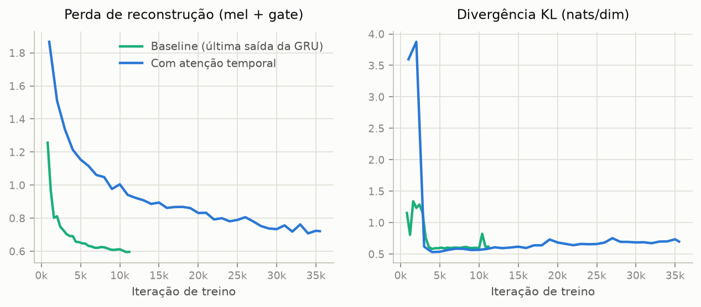
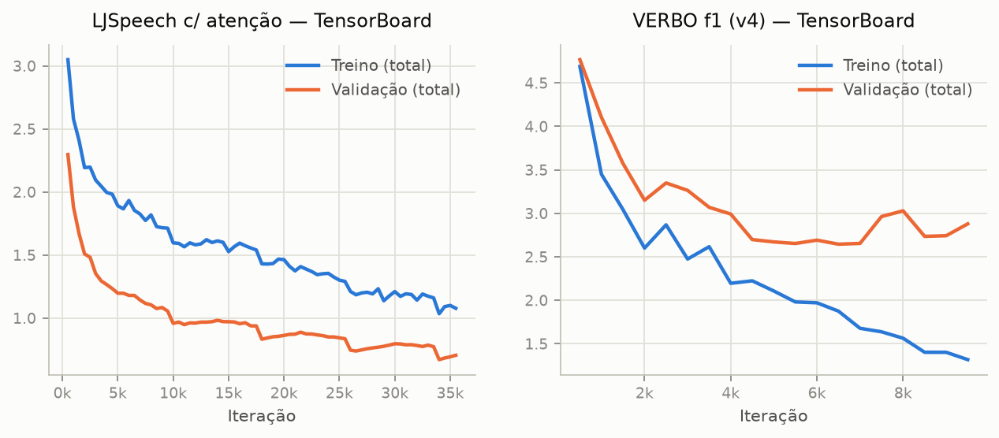
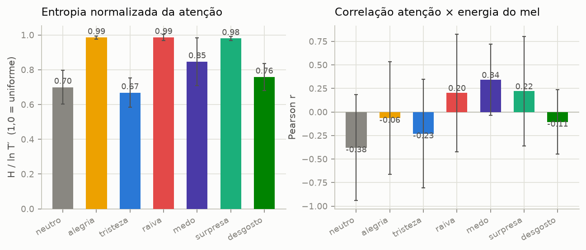
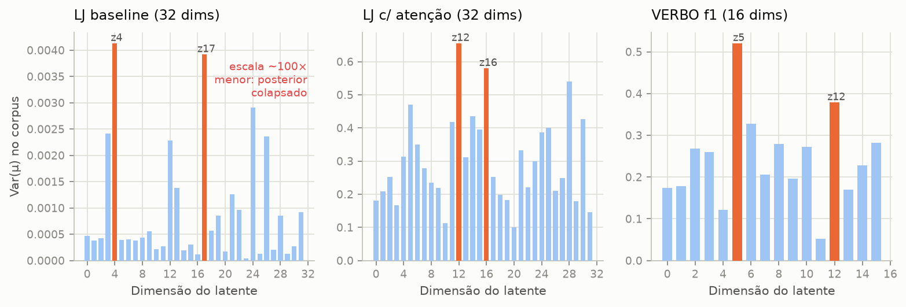
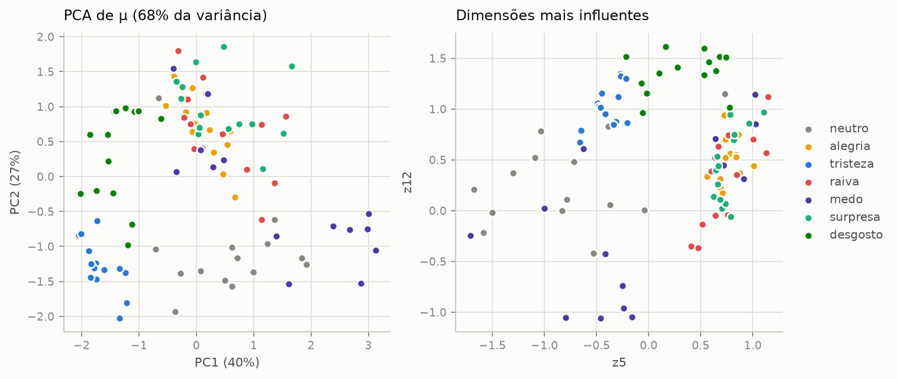
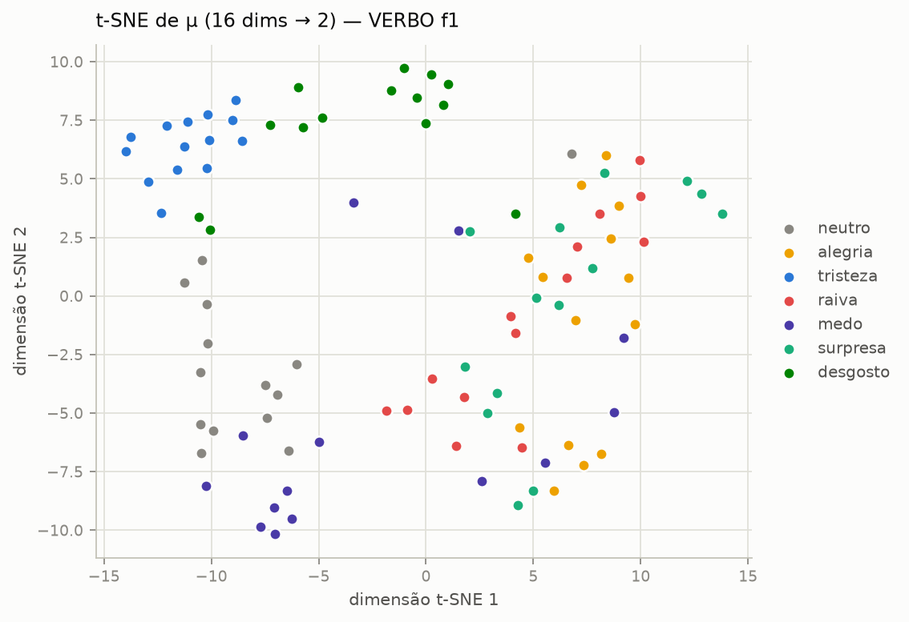
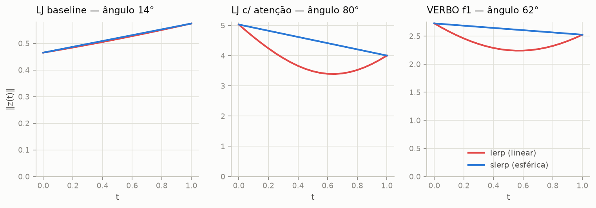
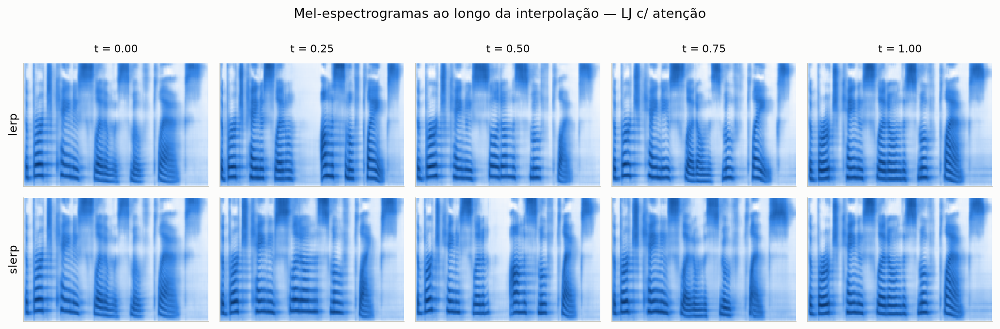
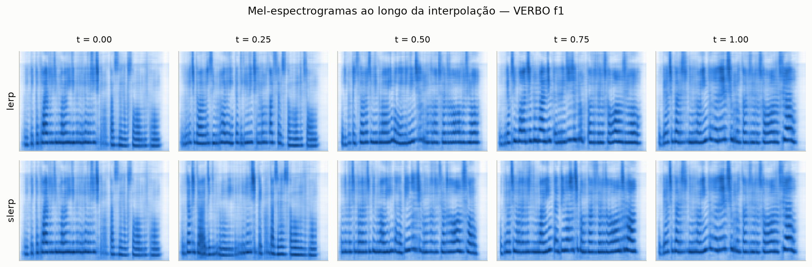
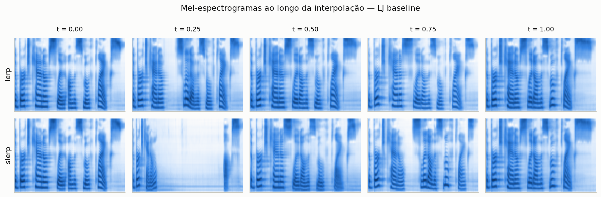

1 · O modelo Do texto à forma de onda, em quatro passos
O sistema é um Tacotron 2 condicionado a estilo por um VAE. Antes de entrar na mudança que esta página estuda, vale montar o modelo por partes:
Passo 1 — Visão geral: um TTS sequence-to-sequence
O encoder transforma a sequência de símbolos numa “memória”; a atenção do decoder decide, a cada quadro de áudio, qual trecho do texto ler; o decoder gera o mel-espectrograma autoregressivamente; o WaveGlow (pré-treinado pela NVIDIA, congelado) converte mel em forma de onda.
Passo 2 — O estilo entra: um VAE sobre o áudio de referência
Um segundo encoder — o reference encoder do VAE — lê um áudio de referência e o comprime num vetor latente z de baixa dimensão (32 no LJ, 16 no VERBO). O z vira um vetor de estilo e, somado a todas as posições da saída do encoder de texto: o mesmo texto pode ser falado com o ritmo, registro e emoção do áudio de referência. No treino, a referência é o próprio alvo (auto-encoding do estilo); na inferência, qualquer áudio serve de referência — é a transferência de estilo das seções 4 e 6.
Passo 3 — Dentro do encoder de texto
Cada símbolo (caractere no LJSpeech; fonema IPA no VERBO) vira um embedding; as três convoluções capturam contexto local (janela de 5 símbolos) e a BiLSTM lê a frase inteira nos dois sentidos, produzindo uma memória com contexto global — é sobre ela que o vetor de estilo é somado.
Passo 4 — Dentro da atenção e do decoder
A cada passo, a atenção compara o estado do decoder com a memória (conteúdo) e também olha onde as atenções anteriores estavam (localização, via convolução sobre os αₜ acumulados), produz pesos αₜ sobre os símbolos e entrega um contexto cₜ; o decoder consome cₜ e o quadro anterior para emitir o próximo quadro mel e um sinal de parada (gate).
O problema: desalinhamento severo no início do treino
A matriz de alinhamento A (quadros mel × símbolos do texto) precisa virar uma diagonal aproximadamente monótona — ler o texto na ordem, a velocidade quase constante. Só que nada na atenção por conteúdo garante isso, e nos primeiros treinos o alinhamento simplesmente não fechava:
- Começo difuso. Com pesos iniciais aleatórios, o softmax da atenção é quase uniforme: o contexto cₜ é uma média do texto inteiro, igual para todos os quadros.
- O atalho do teacher forcing. No treino o decoder recebe o quadro real anterior; como a fala é localmente suave, ele consegue reduzir bastante a perda só extrapolando os quadros anteriores — e o vetor de estilo e do VAE, somado à memória inteira, dá ainda mais informação global que não depende de alinhar. Sobra pouco gradiente para ensinar a atenção a ler o texto.
- Ovo e galinha. Prever o quadro certo exige atender ao fonema certo, mas aprender onde atender exige que a previsão já dependa do texto. Sem um empurrão, o modelo fica preso no ótimo local “ignorar o texto”: na inferência (sem teacher forcing) isso vira palavras repetidas ou puladas, balbucio e gate que nunca dispara — o áudio corre até o limite de passos do decoder.
Sem guia: atenção difusa/quebrada — repetições, pulos, balbucio
Com a perda-guia: diagonal monótona — uma passada pelo texto
A solução foi introduzir uma perda de atenção guiada (guided attention, Tachibana et al. 2017): penalizar a massa de atenção que fica longe da diagonal normalizada, com uma máscara gaussiana W:
W vale ~0 sobre a diagonal (atender o símbolo n/N no instante t/T proporcional não custa nada) e cresce ao afastar-se dela; σ controla a folga. Não força um caminho exato — só torna caro “ler fora de ordem”, quebrando o ótimo local. Nos modelos LJ usamos λ = 2 e σ = 0,4 (folga generosa); no VERBO, com só 98 falas, o problema era muito mais severo e foi preciso um prior fortíssimo: λ = 50 e σ = 0,2.
As perdas de treinamento
- Lmel — MSE entre o mel previsto e o real, duas vezes: na saída do decoder e após o postnet (residual). Mascarada nos quadros de padding.
- Lgate — entropia cruzada binária no sinal de parada; sem ela o decoder não sabe terminar a frase.
- LKL — divergência KL entre o posterior q(z|mel) e o prior N(0, I), calculada por dimensão com free bits de 0,5 (só penaliza a dimensão acima do piso — uma tentativa de evitar o colapso do posterior).
- β(passo) — annealing cíclico: após 2000 passos de espera, β sobe em rampa até 0,2 a cada ciclo de 4000 passos. Se o KL entrasse com peso cheio desde o início, a saída mais fácil seria zerar o latente imediatamente (KL vanishing).
- Lga — a perda de atenção guiada acima (λ = 2 no LJ, 50 no VERBO).
Spoiler honesto: mesmo com free bits e annealing cíclico, o baseline colapsou o posterior (seção 7) — o clamp do free bits zera o gradiente abaixo do piso e não impede dimensões mortas. Nos dois treinos com atenção (LJ e VERBO) o latente permaneceu ativo; como esses treinos também diferem do baseline em número de iterações e grad clip (seção 3), essa comparação isolada não separa o efeito do pooling por atenção, apresentado a seguir, dos demais fatores de treino.
2 · A mudança Do último estado da GRU ao pooling por atenção
No Tacotron2-VAE, o reference encoder comprime o mel-espectrograma de referência (80 canais × T quadros) com 6 convoluções de stride 2 (a primeira é uma CoordConv) e percorre o resultado com uma GRU em T′ = T/64 blocos — cada bloco cobre uma banda de canais mel, dos graves aos agudos. O que muda entre os modelos é como a sequência de estados h₁…hT′ vira um único vetor que alimenta o VAE (μ, log σ²):
A mudança no código é mínima — uma camada linear de score e um softmax no tempo:
# src/models/tacotron2_vae/modules.py — ReferenceEncoder
- _, hidden = self.gru(out) # (1, B, E//2)
- return hidden.squeeze(0) # usa só o último estado
+ out, _ = self.gru(gru_input) # (B, T', E//2) todos os estados
+ scores = self.attn(out) # (B, T', 1) Linear(E//2 → 1)
+ weights = torch.softmax(scores, 1) # (B, T', 1) αₜ ≥ 0, Σαₜ = 1
+ encoded = (out * weights).sum(1) # (B, E//2) Σ αₜ hₜO custo é desprezível (E/2 + 1 parâmetros a mais) e o ganho é duplo: o gradiente flui para todos os blocos da varredura do espectrograma (não só pela cadeia recorrente até o último estado) e os pesos αₜ formam um mapa de atenção legível sobre o espectro, analisado na seção 5.
3 · Experimentos Hiperparâmetros e processo de treinamento
Os dois modelos LJSpeech compartilham a mesma arquitetura (exceto o pooling) e foram treinados no mesmo corpus (13.100 falas, ~23,9 h, uma locutora, inglês). O modelo VERBO usa uma versão reduzida da rede (metade das dimensões) por ter apenas 98 falas (~4,7 min) da locutora f1, distribuídas igualmente em 7 emoções — e usa entrada fonética (G2P via gruut) em vez de caracteres.
Hiperparâmetros completos
| Hiperparâmetro | LJ baseline | LJ atenção | VERBO f1 (v4) |
|---|---|---|---|
| Pooling do reference encoder | último estado da GRU | pooling por atenção | pooling por atenção |
| Dataset | LJSpeech (13.100 falas) | LJSpeech (13.100 falas) | VERBO f1 (98 falas, 7 emoções) |
| Entrada de texto (cleaner) | english_cleaners (caracteres) | english_cleaners (caracteres) | portuguese_phonetic (fonemas IPA) |
| Iterações treinadas | 11.200 | 35.500 | 9.500 |
| Checkpoint a cada | 200 iter. | 500 iter. | 500 iter. |
| Batch size | 32 | 32 | 16 |
| Grad clip (norma) | 5,0 | 1,0 | 1,0 |
| Learning rate | 1e-4 (Adam, weight decay 1e-6, com scheduler de redução) | ||
| Embedding de símbolos / encoder | 512 | 512 | 256 |
| Dim. do estilo E | 512 | 512 | 256 |
| GRU do ref. encoder | 256 | 256 | 128 |
| Latente z (L) | 32 | 32 | 16 |
| Filtros do ref. encoder | [32, 32, 64, 64, 128, 128], kernel 3×3, stride 2×2 | ||
| Decoder RNN / attention RNN | 1024 / 1024 | 1024 / 1024 | 512 / 512 |
| Prenet / postnet | 256 / 512 | 256 / 512 | 128 / 256 |
| Attention (decoder) dim / location | 128 / 32 filtros, kernel 31 | ||
| Annealing do KL | cíclico, upper 0,2, x₀ 4000, lag 2000, free bits 0,5 | ||
| Guided attention (peso / σ) | 2,0 / 0,4 | 2,0 / 0,4 | 50,0 / 0,2 |
| Áudio | 22.050 Hz, 80 mels, FFT 1024, hop 256, fmax 8 kHz | ||
| Dropout (attn / decoder / prenet-in) | 0,1 / 0,1 / 0,5 | ||
| Parâmetros | 28,9M | 28,9M | 7,7M |
● = linhas em que os experimentos diferem.
Curvas de treinamento
Nota metodológica: o log TensorBoard do baseline se perdeu (restaram só os primeiros 400 passos). Para comparar os dois modelos LJ de forma justa, reavaliamos cada checkpoint salvo (a cada 400/1000 iterações) numa amostra fixa de 32 falas do LJSpeech (3–7 s, seed fixa), com a mesma função de perda do treino — o mesmo protocolo para ambos.


Resumo
| Modelo | Iterações | Checkpoints | Recon. final (amostra fixa) | Val. final (TensorBoard) |
|---|---|---|---|---|
| LJ baseline | 11.200 | 57 | 0,596 | — (log perdido) |
| LJ atenção | 35.500 | 72 | 0,722 | 0,705 |
| VERBO f1 (v4) | 9.500 | 20 | — | 2,879 |
4 · LJSpeech Transferência de estilo: baseline vs. atenção
O LJSpeech não tem rótulos de estilo, então escolhemos três referências com prosódia contrastante por medição direta (F0 via YIN e taxa de fala em caracteres/s sobre 250 falas amostradas):
Cada modelo sintetiza as duas frases abaixo condicionado a cada referência (o estilo vem só do áudio; o texto é fixo):
Frase 1: “The birch canoe slid on the smooth planks.” · Frase 2: “Machine learning lets computers speak with feeling and style.”
Frase 1 — “The birch canoe…”
Frase 2 — “Machine learning…”
O que ouvir: nos áudios do baseline, trocar a referência quase não muda a fala — consequência direta do posterior colapsado (seção 7): o vetor de estilo é praticamente constante (‖μ‖ ≈ 0,5 e variância ~0,004 por dimensão em todo o corpus). No modelo com atenção, ritmo e contorno de F0 acompanham a referência de forma audível.
5 · Interpretabilidade Como a atenção muda com o estilo
Cada peso αₜ cobre um bloco da varredura do espectrograma — uma banda de canais mel (T′ = T/64 blocos, dos graves aos agudos). Traçando a curva de αₜ, vemos quais faixas do espectro o modelo usou para definir o estilo — exatamente a informação que o baseline não fornece.
LJSpeech (modelo com atenção)
Os pesos αt são tudo menos uniformes: privilegiam bandas específicas do espectro e mantêm peso alto nos últimos blocos da varredura (as bandas agudas) — o viés da GRU, agora visível e quantificável em vez de implícito.
VERBO: a atenção reage à emoção
O VERBO é um corpus paralelo — as mesmas frases gravadas nas 7 emoções — o que permite comparar a atenção entre estilos com texto idêntico. Agregando as 98 falas da locutora f1 (14 por emoção, posição na varredura normalizada):

Leitura: nas emoções de alta ativação — alegria (0,99), raiva (0,99) e surpresa (0,98) — a atenção é quase uniforme: a energia dessas emoções se espalha em banda larga, com pistas prosódicas por todo o espectro, e o modelo integra tudo. Já em tristeza (0,67), neutro (0,70) e desgosto (0,76) a atenção se concentra em poucas bandas, tipicamente as mais agudas — onde o espectro dessas emoções mais se diferencia. A correlação com a energia bruta é fraca e ruidosa (|r| ≤ 0,38): a atenção não é um simples detector de volume.
6 · VERBO f1 Transferência de emoção em português
Referências: a frase “Os bombeiros estão equipados com uma arma.” gravada pela locutora f1 em cada emoção. Frase sintetizada: a mesma frase do corpus, o que permite comparar diretamente cada gravação real com a síntese condicionada ao estilo daquela emoção.
Referências (áudio real do corpus)
Síntese condicionada a cada emoção
Limitações audíveis: com ~4,7 min de dados e um vocoder WaveGlow treinado em inglês (LJSpeech), a inteligibilidade é limitada e há artefatos. Ainda assim, ritmo e registro mudam de forma consistente com a emoção da referência — o objetivo aqui é estudar o espaço de estilo, não competir com TTS de produção.
7 · Espaço latente Dimensões influentes e manipulação direta
Para achar as dimensões de z que realmente carregam estilo, calculamos μ para um conjunto de falas (400 do LJSpeech; as 98 do VERBO) e medimos a variância de cada dimensão ao longo do corpus: dimensão que não varia entre falas não codifica estilo (o KL a empurrou para o prior).

No VERBO dá para ver o que essas dimensões codificam — plotando μ por emoção, os clusters aparecem sem nenhuma supervisão de rótulo:


Manipulando as dimensões mais influentes
Partimos do μ de uma referência, fixamos tudo e movemos uma única dimensão para média ± 3σ do corpus, ressintetizando (z → FC → estilo → decoder). É um “knob” de estilo descoberto pelo próprio modelo:
LJ com atenção — ref. grave/lenta, “The birch canoe…”
VERBO — ref. neutra, “O aprendizado de máquina…”
LJ baseline — o contraexemplo
O que ouvir: no modelo com atenção e no VERBO, mover uma dimensão muda ritmo/registro de forma audível e gradual — áudio novo que não corresponde a nenhuma referência real. No baseline, ±3σ significa mover ±3 × 0,06 numa dimensão morta: os cinco áudios soam praticamente iguais.
8 · Interpolação Por que interpolar na esfera, não na reta
Queremos criar estilos intermediários entre duas referências A e B interpolando seus vetores latentes. A forma ingênua é a interpolação linear (lerp):
O problema: o prior do VAE é uma gaussiana isotrópica em L dimensões, e em alta dimensão a massa de probabilidade não fica perto da origem — concentra-se numa casca fina de raio ≈ √L (o fenômeno da “bolha de sabão”: a densidade é máxima na origem, mas o volume de uma casca a raio r cresce como rL−1, e o produto densidade×volume tem pico em r ≈ √L). O decoder, treinado com amostras do posterior, só viu vetores dessa casca. A corda que liga A a B passa por dentro da esfera: se o ângulo entre A e B é θ, a norma no meio da lerp cai para cos(θ/2)·r — com θ = 80° (nosso par de referências no LJ com atenção), isso é ~23% abaixo da casca, uma região que o decoder praticamente nunca viu. O resultado típico é um estilo “médio” apagado e espectros borrados.
A interpolação esférica (slerp, White 2016, Sampling Generative Networks) caminha pelo arco do grande círculo entre as direções de A e B, interpolando a norma separadamente entre ‖zA‖ e ‖zB‖ — todos os pontos intermediários permanecem na casca típica:

Aqui interpolamos μ (média posterior) de cada referência, não amostras do prior; num modelo saudável as μ também vivem numa casca (de raio ≈ raiz da variância total), então o argumento é o mesmo.
LJ com atenção — grave/lenta (A) → expressiva (B)

VERBO — tristeza (A) → alegria (B)

LJ baseline — o caso degenerado

Com θ = 14° e normas ~0,5, lerp e slerp produzem essencialmente o mesmo caminho — e o mesmo áudio: mais uma manifestação audível do colapso do posterior. (Os áudios de t = 0,25/0,75 do baseline existem no repositório, mas são indistinguíveis dos demais.)